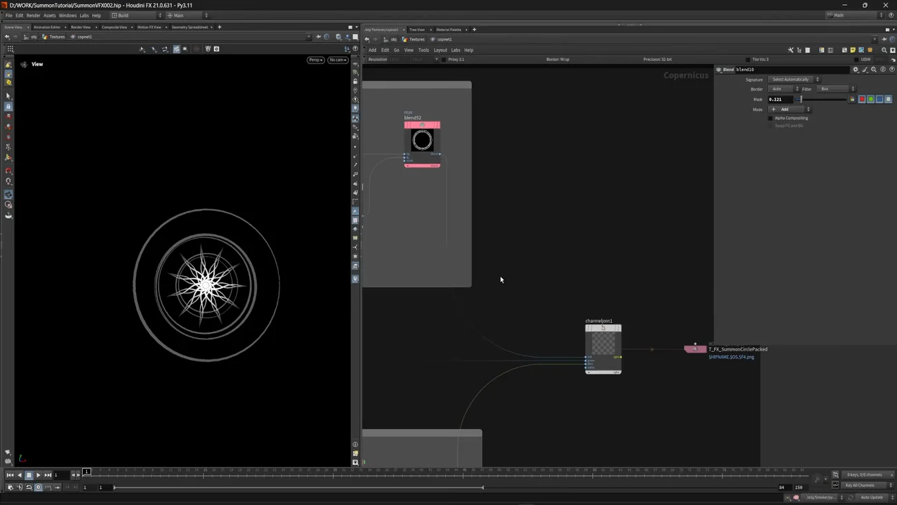
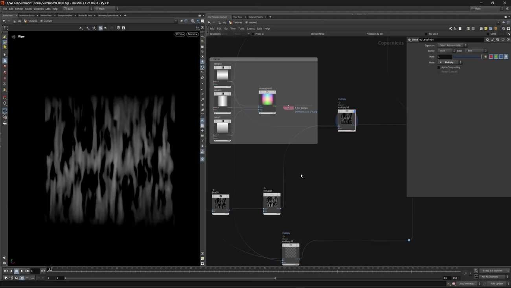
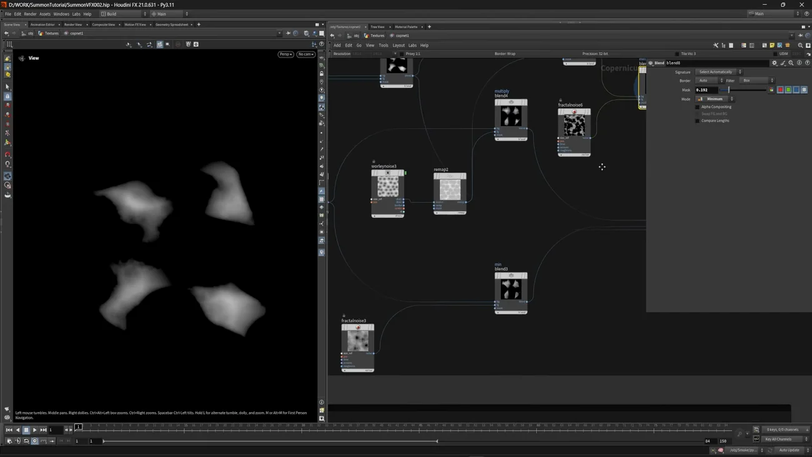
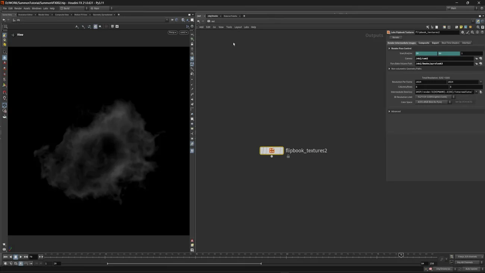

Summon VFX 2 — Copernicus でパックテクスチャを作る
出典: Summon VFX | 2 | Create Textures （SideFX 公式チュートリアル Realtime Summon VFX の第2回 / 講師 Cesar Merchan さん / Houdini FX 21.0.631 / 20:48 / 英語）。 このページは、上記の動画を見ながら自分用にまとめた日本語の学習メモです。SideFX 公式の翻訳ではありません。 前回は8個のメッシュを作って FBX で出すでした。
この回で扱うこと
- パックテクスチャ — グレースケールを R / G / B / A に詰めて1枚にする作り方
sopimportで SOP のジオメトリを Copernicus に持ち込むこと。模様の元は SOP で作りますstamppoint（Stamp Points）で、点の上に形をばらまくやり方- SDF で形を作って
sdftomonoでグレースケールにする、という定番の流れ flow_block_beginの ライブシミュレーションで、流れる模様を対話的に作ること- 煙を Pyro で作って 8×8 のフリップブック（64コマ）として書き出すこと
20分で6枚のパックテクスチャと1つのフリップブックを作るので、ノードの数はかなり多いです。 ただ使っている手は数種類の繰り返しなので、そこを掴めば追えると思います。
1. まず「パックテクスチャ」という発想
この回で作るテクスチャは、ほぼ全部が最後に channeljoin（Channel Join）に入ります。
| チャンネル | 入れるもの（円の模様の場合） |
|---|---|
| R | 文字と外側のリング |
| G | 中間の三角と円のパターン |
| B | 中心の模様 |
3種類の模様を別々のテクスチャにすると、Unreal でのサンプリングが3回になります。 1枚に詰めておけば1回です。リアルタイムでの判断基準がここにはっきり出ています。
Unreal 側では Texture Sample から必要なチャンネルだけを取り出します（第4回で出てきます）。 だからグレースケールの情報しか詰められません。色は Unreal 側で付けます。
2. 円の召喚模様 — SOP で作って COP に持ち込む
Copernicus の中だけで完結させるのではなく、形の元は SOP で作って
sopimport（SOP Import）で持ち込みます。この回では何度もこの形が出てきます。
文字のリング
- SOP 側で
fontノードに文字を並べ、書体を決めます transformで位置を合わせますpathdeform（Path Deform）で円のカーブに沿って文字を曲げます。パラメータは既定のままです- COP 側でラスタライズしてグレースケールにします
外側の二重リングは sdfshape（SDF Shape）で作って sdftomono でグレースケールに落とし、
少しずらしたものと blend で重ねて二重にします。
三角と円をばらまく — Stamp Points
中間の帯はこうやって作ります。
- SOP で
circleを作り、attribwrangle（Attribute Wrangle）で 法線を外向きに、そして up ベクトルも設定します - それを
sopimportで持ち込み、stamppoint（Stamp Points）に渡します - ばらまく形として
sdfshapeの三角を用意し、sdftomonoでグレースケールにします - 同じ形を少し縮めたものを引き算して、輪郭だけの三角にします
法線と up ベクトルを整えておくのが要点です。 Stamp Points は点の向きに従って形を置くので、向きが揃っていないとばらばらになります。
小さい円も同じ作り方で足します。中心の模様は spiral（Spiral Count 3）に
sweep（Surface Shape: Round Tube、Apply Scale Along Curve で細く）をかけたものを
ラスタライズしてスタンプします。
さらに attribrandomize で pscale をばらつかせた点を作り、大きさに変化を付けています。
最後に全部を blend（Add）で重ね、マスクで優先順位を調整して、channeljoin に入れます。

書き出し名は T_FX_SummonCirclePacked、パスは $HIPNAME.$OS.$F4.png です。
$OS（ノード名）を使っているので、ノード名がそのままテクスチャ名になります。
Unreal 側の命名規則（T_ 始まり）に合わせたノード名を付けておく、というやり方です。
3. ソーラークラスタの流れるテクスチャ
ここはノイズを歪めて重ねる作業の連続です。手順としては次の繰り返しです。
| ノード | 役 |
|---|---|
fractalnoise（Fractal Noise） | Element Scale を 10 にして縦に伸びた縞を作ります |
remap | 値の範囲を作り直します |
blur | ぼかします |
distort | 別の結果を歪ませる元として使います。Slope Direction に角度を与えて歪む向きを決めます |
dilateerode（Dilate Erode） | 形を太らせる／細らせる |
equalize | 値を伸ばしてコントラストを立てます |
blend | Soft Light など。モードを変えて重ね方を選びます |
dilateerode は音声だと「delayed erode」と聞こえますが、
正しくは Dilate Erode です。ここは実機で確認しました。
3つのチャンネルには、同じ流れから少しずつ違う結果を入れます。 R は基本形、G は Dilate Erode の値を変えて別のノイズで歪ませたもの、 B は Equalize の結果をランプで掛けたもの、という具合です。 どのチャンネルにも最後にランプを掛けて上下をフェードさせています。

もう1枚、グラデーションだけを3本詰めたテクスチャ（T_FX_Ramps）も作っています。
ランプを3つ channeljoin で RGB に詰めるだけのものですが、
Unreal 側でフェードに使う素材をまとめて持っておく、という考え方です。
4. スパーク — 2×2 のアトラス
スパークは1枚に4パターン入れます。
sdfshape→sdftomonoで基本の形を作ります- Contact Sheet で 1行あたり2枚にして 2×2 のアトラスにします
- タイルパターンの円を、ジッター・オフセット・スケールを変えて配置します
- それを引き算して形を抜きます
worleynoise（Worley Noise）を Remap して掛け、黒い斑点を消しますfractalnoiseとblendして縁を侵食させます

| チャンネル | 入れるもの |
|---|---|
| R | 基本のスパーク |
| G | 別の重ね方をしたもの |
| B | blend の Minimum で作った別バリエーション |
| A | さらに別の1種 |
1枚で4種類 × 4マス持てるので、Unreal 側でランダムに引くだけで見た目に幅が出ます。 これもテクスチャ枚数を増やさないための工作です。
5. ポータルが開くときの形
sdfshape をグレースケールにして、ramp の Type = Concentric
（同心円のグラデーション）を掛けます。そこに fractalnoise を
Slope Direction の角度 90 度で歪ませると、渦を巻いた形になります。
渦にしたいときは角度に 90 を入れる、という指定が動画で明示されています。 この後の別のテクスチャでも同じ 90 度が出てくるので、覚えておくと使えます。
RGB には同じ形の3バリエーション（元のもの / Remap して歪ませて明るくしたもの / 強くぼかしたもの）を入れます。
6. 表面のディテールと法線 — Flow Block のライブシミュレーション
ここで面白いノードが出てきます。bubblenoise（Bubble Noise）を
flow_block_begin / flow_block_end（Flow Block）に入れ、
UV 入力に fractalnoise（Slope Direction 90 度）を渡します。
Flow Block はライブシミュレーションとして回せます。 脳のアイコンの近くにあるボタンでライブシミュレーションを有効にすると、 模様が育っていく様子を見ながら好きなところで止められます。 数値で追い込むのではなく、見て決める作り方です。
止めたら mono でグレースケールにして、パックテクスチャに詰めます。
| チャンネル | 入れるもの |
|---|---|
| R | Flow Block の結果 |
| G | heighttoambientocclusion（Height to Ambient Occlusion）の結果 |
| B | worleynoise を反転して歪ませ、ぼかしたもの |
そしてこの結果から法線マップを作ります（heighttonormal — Height to Normal）。
高さ情報が1枚あれば AO も法線もそこから作れる、という流れになっています。
7. 汎用ノイズも1枚にまとめる
歪ませ用・不透明度用など、あとで何にでも使えるノイズも1枚に詰めておきます。
| チャンネル | 入れるもの |
|---|---|
| R | grunge_layerednoise（Grunge Layered Noise）に fractalnoise（Noise Type: Perlin）を掛けてぼかしたもの |
| G | fractalnoise（Perlin）を Element Size と Amplitude を調整してごく薄くぼかしたもの |
| B | 高周波のノイズと低周波のノイズを組み合わせたもの |
「とりあえず持っておくと便利」というノイズ袋です。 用途が決まっていないものまで1枚に詰めておくのは、実務的だなと思いました。
8. 煙を 8×8 のフリップブックにする
最後は煙です。ここだけ Copernicus ではなく Pyro で作ります。
発生源と解く
sphereにpyrosourceを付け、Initialize から Smoke のプリセットを選びます。 これでdensityとtemperatureが付きます- Particle Separation を下げて解像度を上げます
attribnoiseをP（位置）にかけて、形にばらつきを出しますvolumerasterizeattributesでdensityとtemperatureを保ったままボリュームにします
ここで実用的な工夫が出てきます。ラスタライズの Voxel Size を、 Pyro Solver の Voxel Size から参照させます。 片方を変えたときにもう片方が付いてくるので、解像度がずれません。
ソルバの設定
| タブ | 設定 | 狙い |
|---|---|---|
| Bounds | 領域を調整 | — |
| Sourcing | density と temperature | — |
| Fields | Dissipation を高めに | 煙を長く残したくないので早く消します |
| Shape | Buoyancy を切る | 上に立ち上らせず、その場に留めたいので |
| Wind | Y 方向に少しだけ | — |
| Disturbance と Turbulence を少し | — |
Buoyancy を切るという判断が分かりやすいです。 煙といえば上に立ち上るものですが、ここで欲しいのは「その場に漂うもの」なので浮力を消します。 目的から逆算してパラメータを切る、という例だと思います。
ループさせて書き出す
- 結果を
filecacheに保存します makeloopで 20〜84 フレームをループにします。 これは 8×8 = 64 コマぶんですpyrobakevolumeで見た目を作ります- カメラを置いて解像度を決めます（1コマ 1K）

| 設定 | 値 |
|---|---|
| Start / End | 20 〜 84（64コマ） |
| Columns / Rows | 8 × 8 |
| 1コマの解像度 | 1024 |
| Total Resolution | 8192 × 8192 |
| Color Space | ACES sRGB (Best for Pyro) |
書き出しの手順に注意点があります。まず Render を押して全パスをレンダリングしてから、 テクスチャを書き出します。順番を逆にすると出ません。
Color Space に Pyro 用の選択肢が用意されているのは親切だなと思います。 迷ったらこれ、という指針があるだけで助かります。
この回のまとめ
- パックテクスチャが全体を貫く発想です。グレースケールを R/G/B/A に詰めて、サンプリング回数を減らします
- 色は詰められません。Unreal 側で色を付ける前提の作りです
- 形の元は SOP で作って
sopimportで持ち込みます。Copernicus だけで完結させません stamppointは点の法線と up ベクトルに従うので、SOP 側で向きを整えておきます- SDF Shape → SDF to Mono が形作りの定番です。同じ形を縮めて引くと輪郭になります
distortの Slope Direction を 90 度にすると渦が作れますflow_block_beginはライブシミュレーションで回せます。見て気に入ったところで止める作り方です- 高さ情報が1枚あれば、AO も法線もそこから作れます（Height to Ambient Occlusion / Height to Normal）
- ボクセルサイズはラスタライズ側からソルバ側を参照させると、ずれません
- 煙は Buoyancy を切ってその場に漂わせます。目的から逆算した設定です
- フリップブックは 8×8 = 64コマ、1コマ 1K で 8192×8192。Render を先に押してから書き出します
次の第3回は Vellum です。ポータルから出てくるキャラクターの布を、 Vellum Drape でドレープさせてから破って、ピン留めして固定します。